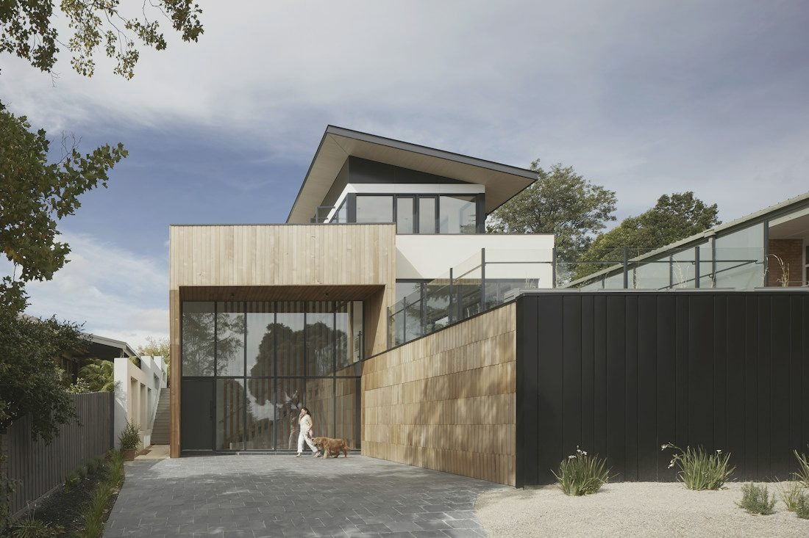
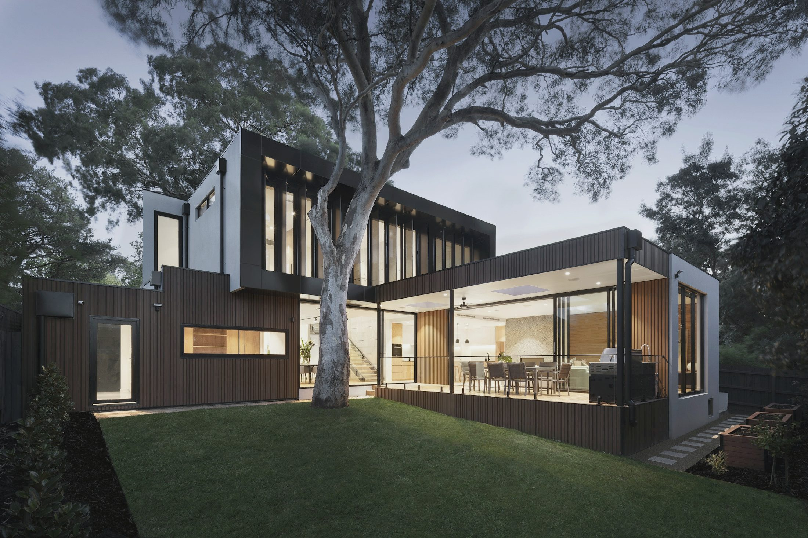
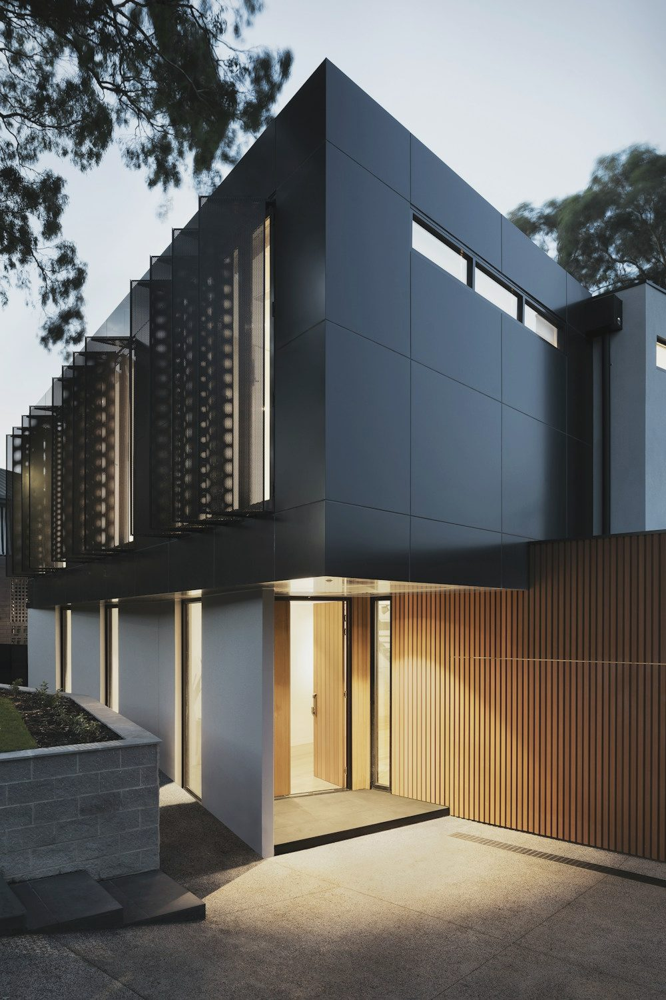
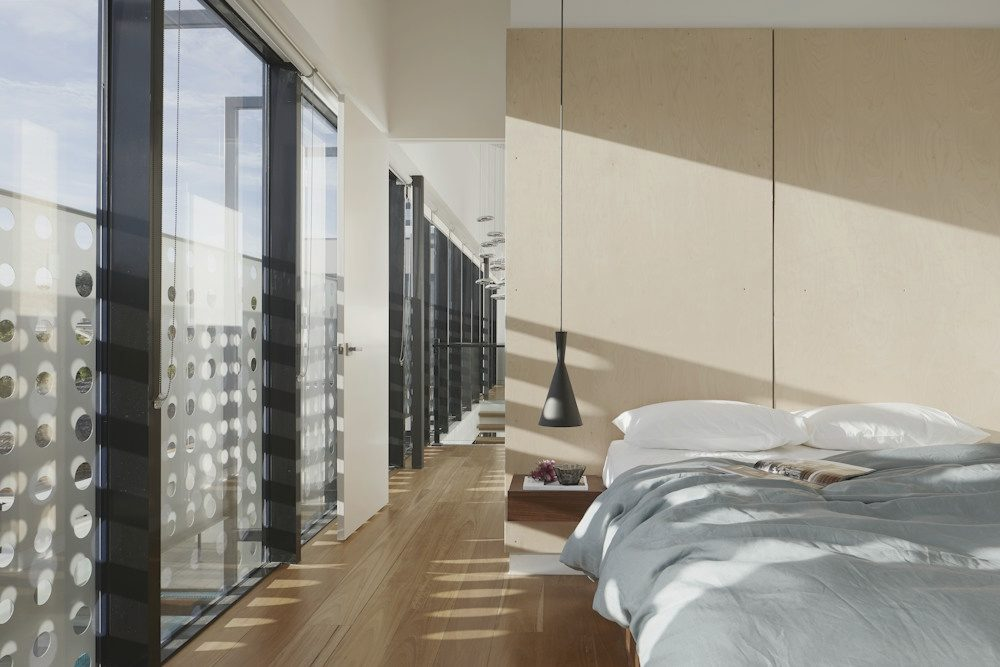
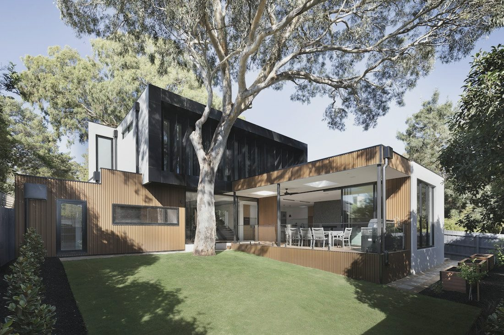
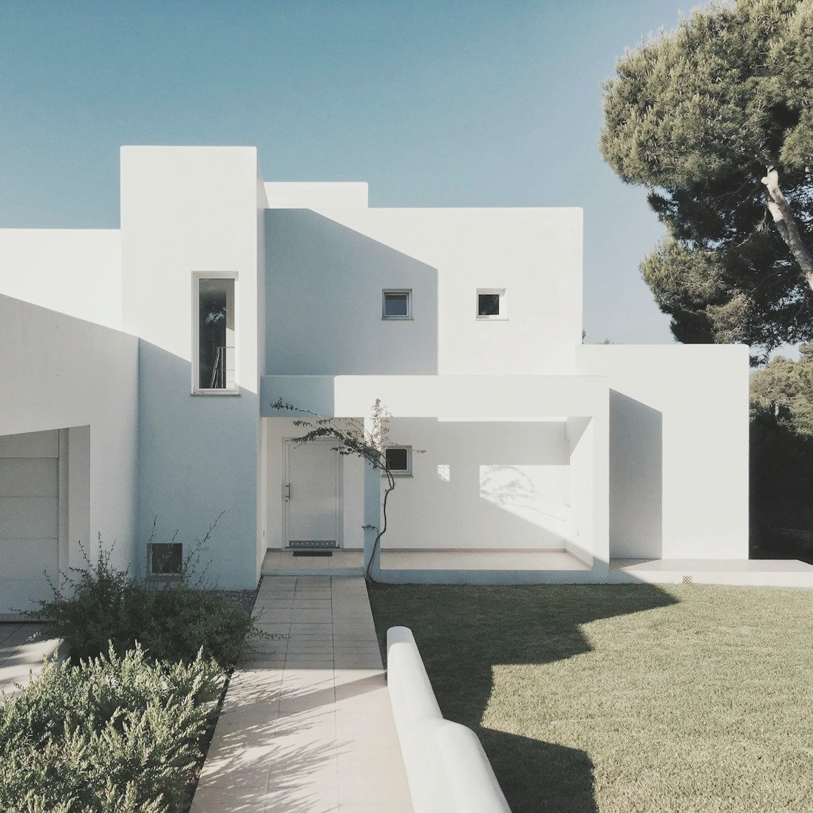
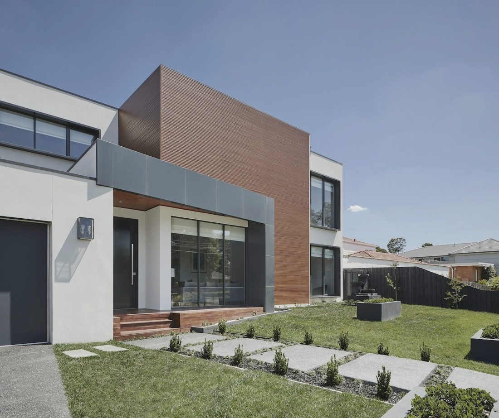
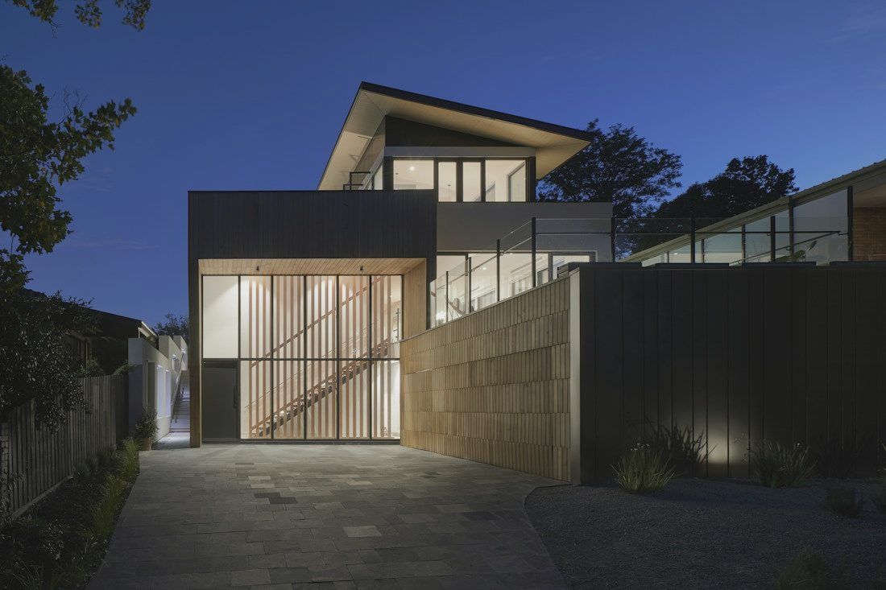
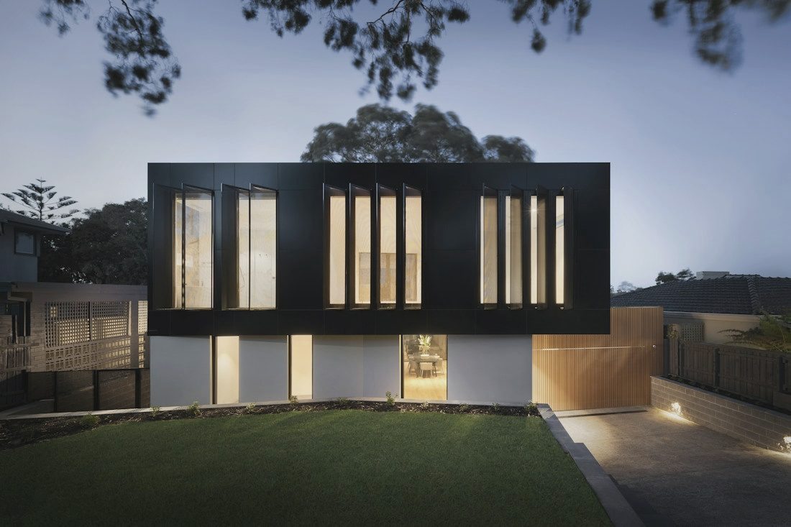
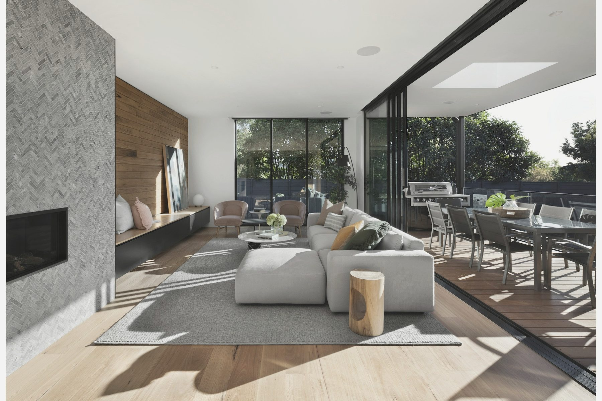

2024Villa Garonne
240 m²
Le Bouscat, Gironde · Construction neuve

Architek dessine à Bordeaux des maisons contemporaines sur mesure, pensées pour leur terrain, leur lumière et ceux qui vont y vivre.
Voir nos projets

Le cabinet
Maisons dessinées et livrées en Gironde depuis 2009
140
De nos clients nous recommandent à leurs proches
97 %
Années à concevoir des maisons sur mesure
15
Mètres carrés habitables conçus par l'agence
18k+
Nos réalisations

2024240 m²
Le Bouscat, Gironde · Construction neuve

2023185 m²
Cap Ferret, Gironde · Construction neuve

2024210 m²
Arcachon, Gironde · Construction neuve

2022165 m²
Pessac, Gironde · Extension

2023290 m²
Saint-Émilion, Gironde · Construction neuve

2025198 m²
Bordeaux Caudéran · Rénovation lourde
Expertises
Du terrain nu à la remise des clés, nous intervenons à chaque échelle du projet résidentiel : neuf, rénovation et intérieur.



Chaque projet commence par une visite du terrain, à l'heure où la lumière est la plus juste.
Depuis Bordeaux, nous construisons sur tout le littoral atlantique et au-delà. Chaque site impose ses règles, son climat et son paysage.
Orientation, sol, vues et vis-à-vis analysés avant le premier trait.
PLU, Bâtiments de France, loi Littoral : le permis sécurisé en amont.
Une maison qui prolonge le paysage plutôt que de s'y imposer.
Bordeaux · l'agence
Nantes
Biarritz
Toulouse
Lyon
Paris
Notre méthode
Concevoir une maison est un engagement de plusieurs années. Notre méthode tient en quatre principes, appliqués à chaque projet, quelle que soit sa taille.
Nous prenons le temps de comprendre vos habitudes, vos envies et vos contraintes avant de dessiner la moindre esquisse.
Plan, volumes et matériaux sont pensés pour votre terrain et pour personne d'autre. Aucune maison ne ressemble à une autre.
Nous vous aidons à évaluer un terrain avant l'achat : potentiel, contraintes et coût réel de construction.
Nous suivons le chantier jusqu'à la remise des clés, avec des artisans girondins que nous connaissons depuis des années.

Un premier rendez-vous d'une heure, sans engagement, pour parler de votre terrain, de votre budget et de votre façon de vivre.
Prendre rendez-vous